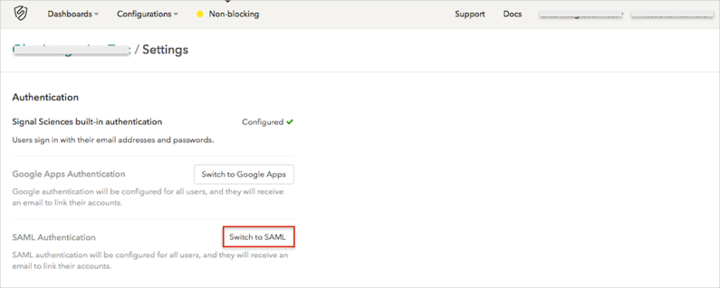
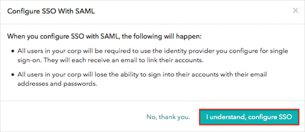
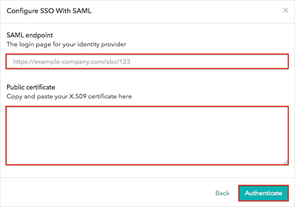
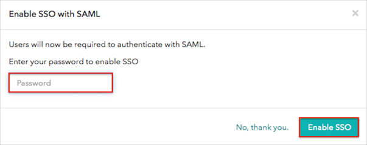
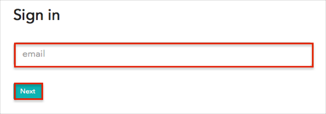

Log in to Signal Sciences as an Organization Administrator.
Navigate to organization > Settings.
Click the Switch to SAML button:

Click the I understand, configure SSO button:

On the Configure SSO with SAML page, enter the following:
Copy and paste the following IDP Login page into the SAML endpoint field:
Sign into the Okta Admin Dashboard to generate this variable.
Copy and paste the following x.509 certificate into the Public certificate field (in PEM text format):
Sign into the Okta Admin Dashboard to generate this variable.
Click Authenticate.

You will be redirected to the Okta login page, enter your Okta credentials.
Back in Signal Sciences, enter your password then click Enable SSO:

Wait for the SAML authentication has been set up for your organization. Users have been sent emails to link their accounts message to appear.
Done!
Notes:
SP-initiated flows and IDP-initiated flows are supported.
Just In Time (JIT) provisioning is not supported.
Open the following Signal Sciences Login URL: https://dashboard.signalsciences.net/login.
Enter your email in the corresponding field.
Click Next.
